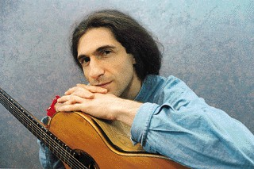

Другая музыка - e-mail интервью с Юрием Наумовым провел Александр Шерман, ведущий музыкального раздела сайта ZHURNAL.RU.
Глюки Становятся Клипами - статья Бориса Гордона, опубликованная в журнале "Огонек"
- Ребята, а сегодня веселых песен совсем не будет...
Господи, вот так начало, - думаешь. Оповестил... Резкая гитара, иногда подвывающая, проваливающаяся, кричащая. Хочется вспомнить, на кого похоже. Ни на кого. Досадно плохая фонограмма продирается сквозь лентопротяжный механизм "Маяка". Звуки, выкатываясь, как шары, падают на пол, оставляя за собой ноющее густое эхо.
- Мужики, а кто это ?
- Юрий Наумов, он недавно в Харькове был.
Осень. Год 1988.
Отвлекаешься от записи. Пусть его крутится. Вернемся к беседе. Опрокинем как надо...
...КАТАФАЛК. Неприятное слово. Свистящим шепотом влетает в комнату, режет надвое наш неторопливый базар.
...НЕ ОСТАНОВИТЬ, Я ЗНАЮ, МАМА... Ну, это уж слишком. Теперь - либо выключить, либо слушать. Выключить нельзя - это как отвернуться. Да кто же он такой, черт возьми?! Очередной рок-бард, последователь сияющего Боба? Куда там, пронизывающим неуютом сквозит "Маяк". Черная песня, как прорубь. И ни капли стеба. Ни тени ухмылки. Катафалк настоящий. Реальней асфальтового катка под окном (туда-сюда). Тяжелее ночи. Ну-у нет. Барышни морщатся, просят сменить катушку. Ладно, заберем, дома послушаем. Катушку в сумку и домой, назад домой.
...ТО, ЧТО МНЕ БЫЛО ДОРОГОЙ НАЗАД... Всю дорогу по дороге домой, по дороге назад, странный текст ворочается в башке, как невыспавшаяся змея, извивается, сворачивается кольцами, вылазит на поверхность сознания обрывками фраз... ОН БЫЛ ТАК ПОХОЖ НА ПЛЕБЕЯ, ЭТОТ ЛЮМПЕН-ПАТРИЦИЙ... о ком это он? В метро - искусственный свежий ветер. Там не бывает холодно, но хочется укутаться... ЭТО БЫЛ ВЕЛИКИЙ БЕЛЫЙ БЛЕФ... Наверх. Еще 15 минут сквозь пахнущий жжеными листьями вечерний микрорайон. Один проходной двор на квадратные километры.
...ЗДЕСЬ КОТЛЕТКИ - ТОЛЬКО ТЕМ, КТО В КЛЕТКЕ...
Щелк ключом. Клац клавишей ВОСПР. ... МАМА, Я ЗДЕСЬ, Я СНОВА ДОМА.
Я нашел его, нажимая кнопки.
Через 8 лет мне удалось поговорить с этим парнем.
E-mail-интервью с
Юрием Наумовым .
Бруклин - Хайфа
08/09/96 - 15/09/96
Этот недлинный разговор по сути является e-mail перепиской. Он растянулся на пять вечеров. На пять вечеров, за которые я благодарен Юре Наумову.
UN: Саша, привет.
Ну, поехали:
ZR: Юра, когда ты начал играть?
UN: В феврале 1974 (мне было неполных 12 лет)
ZR: А когда написал первую песню?
UN: Уточни: сочинил первую музыку или написал первый текст? Поскольку процесс этот не одновременный, разница существенна.
ZR: Когда первый текст? Ты сейчас его помнишь?
UN: Март 1982, назывался он "Депрессия-2" и был последней песней на моем первом альбоме - "Депрессия"
ZR: А первую музыку? Подозреваю, что как только играть начал, да?
UN: Лето 1976. Мне было 14.
ZR: Встреть ты сейчас того, маленького Юру, что бы ты ему сказал?
UN: Наберись терпения и мужества, потому что все будет намного тяжелее, чем ты думаешь...
ZR: Очень странный выбор: 9-ти струнная гитара... Почему их девять?
UN: Моя первая гитара была 7-струнной, и я ее переделал в 6-струнную. Затем, в 1983 я поехал в Питер в первый раз и там купил себе 12-струнку: я пытался найти 6-струнную "Кремону" (Чехословакия или ГДР), но их не было. Экспериментируя с 12-струнной, я быстро выяснил, что мне нравится идея сдвоенных тонких струн (пространственный звук), и ломают сдвоенные басовые (размазанный, неплотный звук из-за дублированной верхней октавы). Решение: 12 - 3 = 9.
ZR: Кого ты еще знаешь, кто бы играл на 9-ти?
UN: Никого. Но поскольку мир велик, и гитаристов сотни тысяч, я могу себе представить, что еще кто-то где-то втихаря щиплет 9 струн...
ZR: Твоя манера игры очень необычна, по крайней мере, в России так не играли. Скажи, у кого ты учился? На кого хотел быть похожим в 16 лет?
UN: В течении 6 лет, проведенных мною в Нью-Йорке, выяснилось, что так и в мире никто не играет. Экспертами в оценке выступили различные люди в возрасте от 20 до 80, включая Леса Пола (ныне покойного) и Элроя Джеймса (учителя Стенли Джордана), которые видали-повидали все.
Первые аккорды (минорные, мажорные и пару септовых) и постановку барре мне показал Сергей Вязунов. Он организовал в нашей школе клуб любителей гитары, который просуществовал около 4-х месяцев, так что мои начальные познания - оттуда. Я был тогда в 5-м классе, он в 8-м.
Изначальная ориентация была на рок, причем тяготеющий к тяжелому, и на гитару в контексте рок-группы. Вычленение ее из этого контекста произошло потом...
А в 16 лет я прикалывался к риффам "Deep Purple", мне очень нравилась манера Дэйва Хилла (гитарист из "Slade"), очень нравилась манера бас-гитариста Гарри Тайна ("Uriah Heep" с 1972 по 1975 год). А похожим мне хотелось быть на Джона Леннона и Джимми Пейджа, причем одновременно.
ZR: Юра, как мне известно, группа "Проходной Двор" состояла с 1987 года из тебя одного, только древняя "Депрессия" была настоящим групповым альбомом. Почему кроме первого и последнего альбома "Violet" ты все время работал один?
UN: Так сложилось...
ZR: Ты любишь одиночество, вообще говоря?
UN: Слово "любишь" в приложении к одиночеству странно звучит... Одиночество можно принимать или не принимать. Я принимаю.
ZR: Несмотря на то, что ты практически всегда выступаешь один, "Violet" записан с группой. Значит ли это возврат к проекту "Проходного Двора" как настоящей группы?
UN: Нет, не значит. Это значит лишь то, что в студийных условиях я стремлюсь к тому, чтобы воплотить свои песни максимально близко к тому, как я их слышу в своей голове.
А на сцене мне по кайфу рубиться в одиночку.
Мои вещи имеют сильную персональную подоплеку. И меня одного в общем-то достаточно для адекватного сценического воплощения.
ZR: Не хотелось ли тебе сделать чисто акустический альбом с хорошими мастерами? Или ты считаешь это помехой твоим стихам (слово "текст" как-то не клеится)?
UN: Ну, во первых, слово "текст" абсолютно уместно. Стихов-то как раз я не пишу. Это именно тексты, специально написанные для конкретной музыки.
Тексты важны, но самодовлеющего значения они не имеют, как, собственно, и гитарные дела. Это составляющие элементы некой субстанции, которая должна быть адекватно воплощена.
Чисто акустический - нет. Я не люблю акустику. Акустика вперемешку с рубиловом - об этом можно подумать...
ZR: Не думаешь ли ты, что электроника вредит живому звуку твоей гитары?
UN: Я не подписывался на "экологически чистые" звуки. Еще раз повторю, я не слушаю чисто гитарную музыку. Меня не это интересует. Гитара для меня есть предпосылка для выхода за предел, для совершения путешествия посредством звука, т.е. гитара - как генератор начальных идей для такого путешествия. Короче, для чего-то небывалого. Дальше эти идеи могут трансформироваться или оставаться в формате акустики. Если я слышу в своей голове электрическое рубилово, и у меня есть устойчивое согласие по поводу него, значит, сия песня будет "наэлектризованной".
ZR: Многие творческие люди пытались проанализировать процесс творчества. Маяковский и Эдгар По уверяли что, мол, умом пишут. БГ - тот гнет свое: это-де как дерево растет. Дали сомневался: то ли башкой думать надо, то ли мака побольше съесть. Что ты об этом скажешь? У тебя как оно?
UN: На меня идеи не сваливаются в готовом виде. Я часто просто дрейфую по грифу. Но у меня ушки на макушке. Если спонтанно рождается классная идея, я ее в состоянии узнать, причем - немедленно. Т.е. есть некий встроенный навигационный прибор, который, по моему ощущению, довольно нехило отстроен.
ZR: Твои песни, они о двух дорогах. Одна назад. Вторая наверх. Так что же такое дорога назад? И где этот верх?
UN: А мне-то зачем комментировать? Лучше, чем в песнях, мне все равно не сказать...
ZR: Как ты относишься к религии?
UN: Я к ней отношусь.
ZR: Юра, тебе говорили о том, что твои вещи тяжелы для восприятия?
UN: Говорили...
ZR: Не пытался ли ты когда-нибудь сделать их... понятнее, что ли?
UN: А зачем? Предпосылка для их понимания задается тем, что это честные песни. Если человек умом не понимает, но сердцем чувствует, что ему не лгут, то начало положено, а дальше уж - как получится...
ZR: У тебя практически нет веселых песен... Заводных тоже практически нет. Пытался ли ты когда-нибудь сделать что-нибудь в этом духе? Если нет, то почему?
UN: Дело, наверное, в том, что меня традиционно "веселые" песни не веселят, и "заводные" не заводят. Сколько я себя помню, я тяготел к темному, угрюмому и замедленному формату. Потом, радостные переживания моей жизни не связаны с моментами творческого вдохновения. Это идет по разным каналам. А раз так, то зачем насиловать себя? В мире до хрена веселых и заводных песен... Меня интересовал момент магии, и когда она есть - в ней и радость, и заводка, и еще до хрена всего...
ZR: В одной из своих старых песен ты называешь себя солдатом рок-н-ролла. Скажи, ты сохранил этот образ? Считаешь ли ты себя сейчас адекватным стилю рок (или блюз даже)?
UN: Пожалуй, что и нет. Момент "солдата рок-н-ролла" предполагает принадлежность некой армии, причастность к ней. Во мне это чувство причастности улетучилось. Я - сам по себе, причем давно. Я не знаю, адекватен ли я СТИЛЮ блюза (их - немало), я знаю, что я адекватен БЛЮЗУ. Просто блюз этот весьма специальный и отстегнутый (непричастный).
ZR: Общаешься ли ты сейчас с российской рок-н-ролльной средой?
UN: Впрямую - нет.
ZR: Кого из нее считаешь наиболее близким тебе по духу? Есть ли такие люди?
UN: Когда я был юным (19-21), наиболее близким мне по духу был Майк Науменко периода 1980-82 года. Я услышал песни в записи и был потрясен.
Впоследствии на меня произвели сильное впечатление артистизм Кинчева, мощь и глубина Башлачева - здесь уже речь идет о непосредственном опыте общения (1985). С тех пор Костя ушел на стадионы, а Майк и Башлачев - из жизни. Были еще люди с достойными находками, но Майк был в ту пору наиболее родной. А с 25-летнего возраста и позднее - похоже, и нет никого.
ZR: А не в рок-н-ролле ?
UN: Вне рок-н-ролла:
из художников - Макс Эшер, Фрэнсис Бэкон, Михаил Шемякин (периода 74-78 гг.), многие средневековые европейцы, в частности, Вермеер, Ван Эйк, Дюрер, Брегель, Босх... В целом период с 1480 по ранние 1600-е изобилует совершенно ломовыми картинами.
В кино: прежде всего Алан Паркер (особенно "Birdy" и "Midnight Express").
В литературе: Александр Зиновьев ("Зияющие Высоты", "Желтый Дом", "Иди на Голгофу") ну и, конечно, булгаковский Мастер...
ZR: Ты был лично знаком с Башлачевым? Могу я спросить, как вы познакомились и стали ли друзьями?
UN: Мы с ним познакомились в кафе "Сайгон" в Питере в феврале 1985 года. Нас представил друг другу Игорь Леонов, бывший в ту пору секретарем ленинградского рок-клуба. У меня должен был вскоре состояться очередной квартирный концерт у совершенно чудесного человека по имени Паша Краев. И я позвал Сашу на свои квартирник. Он пришел. Музыка, игра и общая подача ему были в кайф, однако тексты мои ему не покатили. Тем не менее, он оставил свой адрес и телефон и позвал в гости. У него (точнее, у Жени Каменицкой, на которой он был в ту пору женат) я его в первый раз и услышал. "Время колокольчиков", "Некому березу заломати", ряд других вещей, которые он сочинил буквально за 2-3 месяца до этого. Ну конечно, я был потрясен.
Мы достаточно тесно общались на протяжении примерно 4-х месяцев. Собственно, с Костей Кинчевым я познакомился на Башлачевском дне рожденья. Отношения с Башлачевым в тот период были теплыми и уважительными, хотя назвать их дружескими было бы чересчур громким словом.
ZR: Считаешь ли ты, что у русского музыканта (поэта, художника) есть шансы пробиться к успеху в Америке? Стать там популярным?
UN: Тут нужно определиться в критериях успеха. В таких, например, моментах: элитарный или широкий, минутный или длительный, прижизненный или посмертный ну и т.д.
Например, когда я был подростком, в России был очень популярен американский певец-перебежчик Дин Рид. Его пластинки раскупались миллионами, он из года в год светился в "голубых огоньках": широкая улыбка, теплый баритон, короче - секс-символ. Снимался в кино с Гойко Митичем (был такой югославский актер-культурист, игравший индейцев). Потом он погиб в ГДР в автокатастрофе при загадочных обстоятельствах (ходили слухи, что это подстроили люди из Штази)
Прошли годы. В миллионах русских домов пылятся его пластинки. Ну и хули?
Василий Кандинский, Антон и Михаил Чеховы, Петр Чайковский посмертно успешны в Америке, популярны, а главное - актуальны.
ZR: Да. Но я о живых спрашивал. Просто лично мне, никогда в Штатах не бывшему, Америка представляется некой машиной, для которой топливо - все, а output - гамбургер из McDonalds.
UN: Я сталкивался с людьми, никогда не бывавшими в России, которым Совок представлялся некой машиной, для которой топливо - все , а output - спичечный коробок из Гулага...
ZR: Однако и то, и другое - попытка определения фона, среды. Вопрос был: сможет ли в этой среде пробиться - выжить - нечто ей несвойственное, непривычное, не по ее законам сделанное?
UN: Ответ: в принципе да, если сможет найти или создать для себя нишу.
ZR: Творец жив своей популярностью, а она определяется простым большинством голосов. Как же быть?
UN: Ну да... В 20-е годы творец Демьян Бедный был намного популярнее творца Сергея Есенина. И я не знаю, как тут быть. Александр Зиновьев в своей книге "Иди на Голгофу" писал: "Религия побеждает, идя дорогой поражений - такова ее историческая роль".
Наверное, надо различать сиюминутное большинство голосов и сумму голосов на протяжении времени. Не знаю...
ZR: У тебя есть американская (именно американская, не-эмигрантская) аудитория?
UN: Поскольку я играю большей частью в Нью-Йорке, аудитория смешанная. Чисто американская аудитория, в принципе, может сложится лишь в случае успешной и длительной карьеры. Это трудно, но не исключено.
ZR: По стране разошлись тысячи кассет с записями бутлегов, концертные записи неизвестно где, кем и когда сделанные. А почему бы тебе не собрать твои старые (и не такие уж старые) гитарные вещи, да и не выпустить альбомом? Ведь куча песен так ни в один альбом и не вошли.
UN: Саша, я уже говорил: я не люблю акустику, понимаешь? У меня не было возможности спокойно и сосредоточенно работать над альбомами, которые я задумал. Сейчас эта ситуация потихоньку выравнивается. "Violet" - первая (и, я надеюсь, не последняя) ласточка.
ZR: Правда ли, что "Московский блюз" - совершенно "copyleft", и ты не знал о его записи?
UN: На самом деле, "Московский буги".
Нет, он "copyleft" лишь отчасти. Я знал о сделанной записи, и я приложил усилия к тому чтоб альбом по содержанию и последовательности песен был таким, какой он есть. По возвращении в США я переслал в "Фили Рекордс" (цифровая запись была в их распоряжении) свои подробные предложения по альбому вместе с контрактом. Моим предложениям "Фили" последовали, но контракт не подписали, а просто пропали на 5 месяцев из поля зрения. Как впоследствии выяснилось, они втихую шлепнули тираж в Австрии (количество CD мне неизвестно) и лишь потом поставили меня перед сим радостным фактом.
Я был огорчен, но не удивлен...
ZR: Знаешь ли ты уже, каким будет твой следующий диск?
UN: Да, примерно представляю...
ZR: Песни судит аудитория. Были ли для тебя неожиданности, когда мнение публики не совпадало с твоим собственным мнением? Неожиданный успех песни?
UN: Ты знаешь, настолько, насколько я могу судить в ретроспективе, мне на публику повезло более, чем кому-либо из моих коллег по рок-андерграунду.
Я побывал на подпольных и полуподпольных концертах большинства значительных рок-художников моего времени и преисполнился гордостью за свою аудиторию. По степени глубины вруба и эмоциональной самоотдаче это было лучшее из возможного. Предел мечтаний для художника. Моя аудитория мне предоставляла пространство, в котором я мог существовать как предельный художник и отыгрывать безумные по насыщенности концерты. Не капустники, не тусовки и не посиделки, а именно концерты. У меня была возможность строить концерт, как некую ткань, по своей драматургии и песни были просто составляющими элементами ткани...
Реакция моей публики на ткань в целом была адекватной.
ZR: Может, и не очень корректный вопрос, и все же: какие из своих песен ты сам больше любишь? Есть ли те, что ты сам считаешь неудачей?
UN: Есть неудачи, и таких - навалом в периоде 1982-83 годов. Я был еще маленький, и песни - детскими. Начиная с 1985 года крупных неудач - считанные единицы. Касательно любимых: практически все психоделические и все медленные блюзы.
ZR: Юра, ты стал, по-видимому, первым русским музыкантом, заведшим свой Home Page в Интернет. Кто-то посоветовал или ты сам на это внимание обратил?
UN: Я не уверен насчет своего приоритета в этом деле. Просто среди молодых программистов, переехавших в США, были те, кто знал и любил мои песни. С их легкой руки я был представлен этому формату, и я очень им благодарен. Сам бы я в это не раскрутился: в школе я был двоечником по математике. Компьютер у меня устойчиво ассоциировался с математикой, и у меня был комплекс неполноценности в отношении всех этих дел.
ZR: Твоя страница сделана в коммерческом духе, как-то диссонируя с твоим творчеством. Кстати, она сделана очень здорово.
UN: В американском лексиконе года полтора назад появилось словечко "infomercial": синтез информации и коммерции. И это словцо вполне применимо к моему HomePage. Предположим, тебя покоробил тот факт, что там существует коммерческая реклама моего нового альбома "Violet". Но позволь спросить: а каким бы еще путем ты узнал о существовании этой работы? Из журнала "Billboard"? Из передач российского ТВ? Допустим, тебе интересно мое творчество. Им - похуй. Они могут предложить свои услуги по раскрутке и заломить за это деньги, которых я сроду в руках не держал. Иных мотивов, кроме как "нарубить капусту" у подавляющего большинства этих людей нет. И они все безумно деловые и занятые. Ни я, ни моя музыка им не интересны - у них есть дела поважнее. Так зачем мне обременять их своими проблемами? Не лучше ли выйти напрямую в мир, рассказать о себе, рассказать о своем продукте и предоставить желающим его приобрести такую возможность? По-моему, все честно.
ZR: Нет спора. Ты делал эту HP сам, или ее сделали по твоему заказу?
UN: Самый первый вариант и общую концепцию мне сделал Алекс Коллаген. Было это около года назад. Изначальная концепция, в общем, сохранена. Но по мере освоения компьютерной графики я вносил в него изменения и дополнения, пока он не принял свой сегодняшний вид.
ZR: Когда ты вообще Интернетом занялся?
UN: Года полтора назад.
ZR: И что тебя в нем привлекает?
UN: Демократичность.
ZR: Почему бы тебе не опубликовать на твоем Home Page все твои тексты?
UN: Я все же предпочел бы сначала выпустить альбомы.
ZR: Юра, скажи, когда родилась идея "Violet"? Насколько я знаю, в него вошли абсолютно незнакомые публике вещи, только "Поролоновый Город" из старых запасов. Все эти песни американского периода?
UN: Идея "Violet" была со мной всю мою сознательную жизнь. Я еще ребенком знал, что это мой самый любимый цвет, и, став музыкантом, я знал, что когда-нибудь запишу альбом, названный этим цветом. На момент 1983-84 года я вовсю флиртовал с этой идеей. Каждый раз отбирались разные песни, но изначальная установка была сразу на то, что альбом будет темным, тяжелым, болезненным и отстраненным. Короче, все кайфы. В свой окончательный вариант идея оформилась к лету 1989 года. К тому времени были сочинены все песни, составляющие данную работу. И в один прекрасный день они склеились в моей голове в то, что и есть окончательный "Violet". Все эти песни русского периода.
ZR: Ты можешь сказать о "Violet" что он концептуален (так же, как, скажем, "Перекати Поле")? Изменился ли посыл? В чем его отличие?
UN: В общем, да. Эмоционально концептуален. Мне трудно судить о том, изменился ли посыл... Для меня внутренне - вроде бы нет. Для людей вовне - возможно, да...
ZR: В отличие от музыкального лаконизма предыдущих твоих вещей, "Violet" насыщен звуком. Чем вызвана такая перемена?
UN: Возможностью наконец-то поработать в человеческих условиях.
ZR: Не боишься ли ты потерять своего слушателя, выращенного на другом музыкальном материале?
UN: Я исхожу из предпосылки, что мой слушатель уже потерян. Я молчал 7 лет. Для рок-н-ролла это целая вечность. Я начинаю как бы заново.
ZR: Изменилось ли с тех пор твое восприятие и понимание музыки? В какую сторону спектра сместится следующий альбом?
UN: В чем-то восприятие изменилось, и сильно. Но в целом это довольно органичная эволюция. По ощущению, меня особенно не заносило.
В моих сегодняшних поисках есть преемственность относительно пласта 10-летней давности. А касательно спектрального анализа: возможно, в инфракрасный... Во всяком случае, до зеленого, я надеюсь, не дойдет.
ZR: Будет ли "Violet" в программе твоих московских концертов, и когда нам следует ждать сами концерты?
UN: Все, что можно воспроизвести в акустической версии, будет исполняться. Во всяком случае, "Поролоновый Город" и "Ночной Полет" - наверняка.
По крайней мере один концерт должен быть в субботу, 26 октября в 19:00 в Москве, в Центральном Доме Художника на Крымском Валу. Возможны одно-два клубных выступления. Все это на стадии переговоров.
ZR: Ты много пел о беге (о бегстве?). Скажи, закончен ли он для тебя? Успокоился ли ты? Нашел ли то, для чего ты бежал?
UN: Забавный вопрос для закоренелого эскэйписта... касательно города и страны, в которой я живу - пожалуй, что закончен. Для меня сегодняшнего ничего лучше Нью-Йорка нет и быть не может. То, ради чего я бежал, я всегда имел в себе. У меня нет внутреннего конфликта. Мои проблемы были внешние и, кроме как бегством, они не решались. Здесь до хрена внешних проблем, но по большому счету они не конфликтуют с моей внутренней сутью.
ZR: Не надоел ли тебе этот "Zhurnal.ru" со своими вопросами?
UN: Немного...
ZR: Что ж, "...и Шахерезада прекратила дозволенные речи". С сожалением, должен заметить. :)
До связи.
UN: До связи.
С Юрием Наумовым e-mailировал Саша
Шерман sherman@zhurnal.ru.
Исходная публикация находится на
сайте ZHURNAL.RU.
Copyright: Ogonyok, 1996

-- Пустите, я через пол-России ехал! -- стонал перед запруженным входом чуждый на вид солидной толпе тинейджер. Европеизированные львовяне прошли без стонов -- очевидно, заплатили искомые пять номиналов. Из джипа в зал степенно проследовали респектабельные кавказские крутяги -- боже, и их юность прошла под знаком Наумова!-- Это что, я теперь, прям, звезда?! -- крикнул Наумов в клокочущий зал, едва выйдя на сцену.
-- А то?! -- без колебаний взорвался зал.
...Один из самых техничных блюзовых гитаристов мира уже не россиянин. Жизненный маршрут Юрия Наумова: Новосибирск -- Ленинград -- Москва -- Нью-Йорк -- в этом году был отмечен получением американского гражданства. «Процедура? Фигня. Ну, почти как в пионеры вступать», -- признался маэстро. И вправду фигня -- никакие скитания по миру даже сибирского акцента Наумова не выветрили. Чего тогда уезжал? «Я же амбициозный парень, -- сказал мне Юрий, -- ну маленько, правда, не рассчитал, что блюз -- вообще не сильно раскручиваемый жанр. Так что сижу пока тихо. Никого не трогаю, никого не слушаю». Про принцип Борхеса -- не слушать современников, а то лицо потеряешь -- Наумов не слышал. «Видать, интуитивно ему следую».
Наумов потеряет лицо?! Скорее небо упадет на Дом художника. А впрочем, зачем небу падать на ЦДХ? Нагрузка, которую это заведение вынесло от наумовских блюзов и зрительских взрывов на грани истерик, вряд ли была меньше, чем от падения неба.
Официально концерт знаменовал презентацию первого непиратского лазерного диска Наумова «Фиолетовый». На шаблонные вопросы бесчисленных репортеров о причине названия Юрий отвечал почти в ключе ослика Иа-Иа из сказки про Винни Пуха, нечто в духе «мой любимый цвет, мой любимый размер». Но если серьезно -- значимость этой вехи понимал всяк, кто знал о неизбывном с совковых времен синдроме отношения к уехавшему, как к умершему -- мол, теперь можем не церемониться. Отсюда бесчисленные пиратские кассеты, отсюда и отвратный пиратский лазерник с расплющенным звуком -- мол, автор далеко, не приедет, не взыщет.
Приехал. Но не взыскивать, а петь. Практически все свободное пространство между первым рядом и сценой заняли коленопреклоненные фотографы. И хотя эта поза была, есть и будет объяснима естественным стремлением не загораживать сцену другим людям -- но все ж был в том некий символ. Символ чего? А кто его знает.
Кто его знает, где адекватнее воспринимают Его блюз. С русской колокольни американское слушание блюза в кабаке под чмоканье и чоканье -- чуть ли не знак унижения Артиста. Неправда. У Них Так Принято. Длинно-черноволосого русского в богемно-студенческом Гринвич-Виллидж, что в Нью-Йорке, уже приметили и уже любят. По оценке самого Наумова, у Них больше завернуты на музыку, у Нас -- на текст: «Больших поэтических амбиций у меня никогда не было. Если б были -- вполне возможно, остался бы в России».
И все же он не в России. Смею высказать бредовую версию -- абсолютно того не желая, своим отъездом Наумов невольно отмежевал себя от того, что произошло ныне с оставшейся здесь частью тусовки питерского рок-клуба. От интеграции в мерзкую практику внутренней раскрутки в электронных СМИ, попадание в которую, в свою очередь, тоже отмежевало вчерашних бунтарей от самого бунтарства, чистоты и прочего, за что мы любили их тогда. Но это лишь версия.
В перерывах в кулуары заходили самые странные гибриды, впервые виданные мною в этой жизни. Хиппозные волосатики и бритые «металлисты» -- но с пейджерами и мобильными телефонами. Обнимались с Юрием и следом как бы извинялись за нынешний свой статус: «Я уже почти не играю, старик. У меня своя студия. Да, клипы. Рекламка. Денежки -- куда денешься. Жена, дети». Наши хиппи повзрослели. Блюзмены их юности (да и детства -- одна из поклонниц за сценой призналась, что не вылезает с наумовских концертов аж с двенадцати лет) теперь не в подвалах, а в залах. Теперь с этим блюзом больше не клеится «уйти из дому, вскрыть вены, попасть в крэзу, скосить от армии, сесть на иглу». Теперь есть продюсер Урюпин, спонсор Куранов и директриса Центра искусств Толмачева, удивленная охрана «мы не думали, что блюз -- это так круто; пожалуй, надо бы разжиться сидюшкой», отменно отлаженный звук, оттеняющий виртуозную технику маэстро. Да и сам Наумов, чья музыка и тексты традиционно считались «давящими на психику» вплоть до энергетического обескровливанья последней -- мягок, добр, весел и оптимистичен: «Да бросьте вы, ребята, ныть, что лишь в России такие плохие попса и рок-н-ролл -- и Штаты завалены музыкальным мусором, и Франция, и кто угодно -- выше голову, родные!»
А почему бы и не выше -- если один из лучших блюзменов планеты (близка кому-то его музыка или далека -- дело другое, но уровень-то не отменишь!) за полным пониманием все же едет в Москву?! Глюки становятся клипами, и, слава богу, хоть в эти минуты дежурное нытье о том, что в России уже некому слушать и понимать что-то стоящее, замолкает.